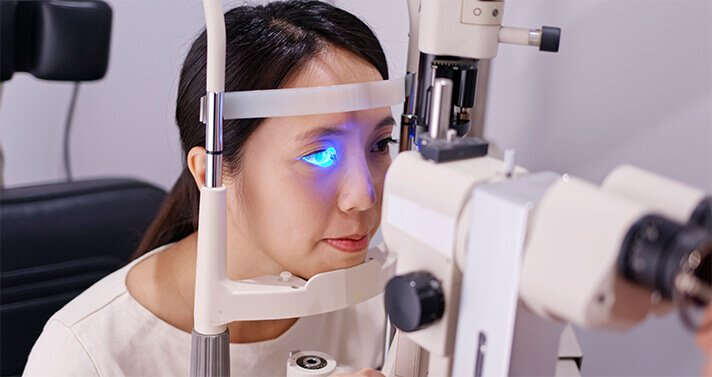

أخبار الأسبوع: ما الذي يسبب فقدان البصر السريع لدى معظم الأشخاص بعد سن الأربعين؟ كيفية الوقاية من العمى و تحسين البصر؟
حصل طبيب على أعلى تقدير لتطويره طريقة جديدة تسمح للأشخاص من أي عمر بتحسين بصرهم.
في صيف عام 2023، حدث شيء غير عادي في المؤتمر السنوي للعيون . ارتفعت القاعة بأكملها لتشكر المتحدث بالتصفيق لمدة عشر دقائق. برانيمير نيستوروفيتش، دكتور في الطب من صربيا. لقد طور هذا الطبيب تركيبة فريدة يمكنها تحسين الرؤية الجيدة ومنع العمى.
اقترح برانيمير فكرة ممتازة، وقد قبلها أفضل العلماء في البلاد. شارك خبراء من جهات عديدة البحوث الطبية الوطنية الأخرى في تطوير المنتج. الطريقة الجديدة تظهر بالفعل نتائج ممتازة.
في مقابلة اليوم، سنشرح كيف يمكن لهذا المنتج أن يساعد العديد من الأشخاص وكيف يمكن لسكان الجزائر شرائه بخصم كبير.
الصحفي: برانيمير، أنت من بين أكثر عشرة طلاب ذكاءً في العالم. ما الذي دفعك للبحث عن طريقة جديدة لتحسين البصر؟"
والحق يقال، الأسباب التي كانت لدي كانت في الغالب شخصية. منذ بضع سنوات، بدأ بصر والدتي يتدهور تدريجياً. النظارات والعدسات اللاصقة لم تحسن الوضع. وكان بصرها يضعف بشكل مطرد. قررنا إجراء عملية جراحية للعين، ولكن قبل أسبوع من العملية تبين أن تدهور الرؤية كان بسبب عدم وصول الدم الكافي إلى العدسة وقاع العين، لذلك كانت العملية غير واردة.
لقد أدت هذه المشكلة إلى ترك والدتي عمياء تمامًا. لذلك بدأت بدراسة مشكلة ضعف البصر. لقد فوجئت عندما اكتشفت أن معظم المنتجات الكيميائية التي تباع في الأسواق لا تساعد حقًا، بل قد تضر. في الواقع، هذه المنتجات الكيميائية تؤدي فقط إلى تفاقم المشكلة . كانت والدتي تأخذهم كل يوم.
في السنوات الثلاث الماضية انغمست تمامًا في دراسة هذا الموضوع. في الواقع، أثناء كتابة أطروحتي للدكتوراه، قمت بتطوير طريقة جديدة لتحسين البصر يتحدث عنها الجميع. أدركت أنني قمت بإنشاء طريقة مبتكرة تمامًا. لكنني لم أتخيل أبدًا أن هذا سيولد مثل هذا الاهتمام المذهل في المجتمع الطبي والتجاري.
الصحفي: ماذا تقصد بالضبط؟
"بمجرد ظهور المنشورات حول طريقتي، بدأت عروض بيع الفكرة تصل على الفور. قُدمت لي عروض بملايين الدولارات . و العديد من الشركات أرادوا شراء صيغتي مقابل المال . الآن قمت بتغيير رقم هاتفي ولا أستخدم وسائل التواصل الاجتماعي.
المراسل: "ولكن على حد علمي، لم تبيع الصيغة؟"
- بالطبع لا! قد لا يعجب البعض، لكنني وطني أحب بلدي وأدعمه في كل شيء. . أنا لم أصنع هذه الأداة ليستفيد منها الأجانب، الذين يفرضون علينا العقوبات. . ففي نهاية المطاف، ماذا سيحدث إذا قمت ببيع التركيبة في الخارج؟ سيحصلون على براءة اختراع ويحظرون إنتاجنا ويرفعون الأسعار. ولن تتمكن صربيا ببساطة من تحسين بصرها. .
لذلك، عندما تلقيت عرضًا من الدولة للمشاركة في تطوير هذا المنتج الوطني ، وافقت على الفور. لقد عملنا مع أفضل المتخصصين من العديد من التخصصات . .
شارك أفضل العلماء في البلاد في تطوير منتج يعتمد على صيغة برامير.
الصحفي: ما هو المبدأ الذي تقوم عليه فكرة برانيمير نيستوروفيتش؟ "هل تساعد الصيغة التي طورتا بالفعل على تحسين الرؤية الكاملة في أي عمر؟"
فكرة برانيميرا هي نهج جديد تماما للتخلص من مشاكل العيون. ولا يخفى على الخبراء أن جميع المواد الكيميائية المتوفرة في السوق لا يمكن أن تكون فعالة إلا في المراحل المبكرة من المشكلة . علاوة على ذلك، اعتاد المختصين إعطاء المواد الكيميائية للناس التي لا تؤدي إلا إلى تأخير ما لا مفر منه. وعندما يصبح الشخص أعمى عمليا، يتم وصف الجراحة لهم على الفور.
في أوائل العقد الأول من القرن الحادي والعشرين، اكتشف العلماء أن 90 بالمائة من مشاكل الرؤية هي نتيجة عدم كفاية إمدادات الدم إلى العين. ونتيجة لذلك، لا يمكن للمواد المفيدة أن تدخل إلى العدسة والصلبة والقرنية. ولكن إذا تمكنا من إزالة سبب المشكلة فإن الحاجة إلى التدخل الجراحي ستختفي في معظم الحالات.
تركيبة برانيميرا تضمن تحسين الدورة الدموية الجيدة في العين، وتزيل الجفاف والحرقان، وتحفز عملية التمثيل الغذائي لخلايا القرنية. وهذا يمكن أن يقلل من خطر تدهور الرؤية وحتى منع العمى. يمكن للمنتجات الكيميائية المتوفرة تجاريًا أن توفر الراحة فقط في المراحل المبكرة من المشكلة و لكن ليس بشكل نهائي .
الصحفي: ولكن أليس من المعتقد أنه من المستحيل تحسين البصر دون جراحة، خاصة بعد أربعين سنة؟
لا يوجد أساس علمي أو دليل لمثل هذا الرأي. إنها مجرد أراء شخصية من بعض الناس . لقد ثبت منذ فترة طويلة أن أجهزة الجسم لدينا قادرة على تحسين نفسها. كل ما عليك فعله هو منحهم القليل من المساعدة.
الصحفي: كيف يتم التخلص من مشاكل العيون؟ "هناك العديد من المواد الكيميائية لتحسين العيون التي يمكن العثور عليها في الأسواق."
هذا صحيح، هناك العشرات منهم. لكن الجميع يتصرفون وفق المبدأ الذي وصفته في بداية المحادثة. هذه الأدوية يمكنها فقط تخفيف الأعراض وليس أكثر. يحظى الناس براحة مؤقتة فقط. ومع ذلك، فإن لهذه المواد الكيميائية العديد من من الآثار الجانبية، وهناك احتمال كبير أن تؤثر سلبًا على الوظيفة البصرية ولا تعزز التعافي. برانيمير على حق تماما. إذا نظرت إلى التركيبات الكيميائية المتوفرة في الأسواق سيخبرك أي خبير جيد أنه يجب استخدامها فقط كملاذ أخير.
الصحفي: ما الفرق بين المواد الكيميائية المعروفة و هذه التركيبة الجديدة ؟ وهل هذه التركيبة تساعد على تحسين البصر بشكل كامل؟".
الفرق هو أن هذا المنتج يعمل على تحسين تدفق الدم إلى العين، مما له تأثير مفيد بشكل عام. الأداة قادرة على تنشيط أكثر من 930.000 خلية تشارك بشكل مباشر في عملية تحسين الرؤية.
تبدأ الرؤية بالتحسن بعد الأسبوع الأول من تناول المنتج. ويصبح أكثر إشراقاً، ويختفي الاحمرار والجفاف والحرقان تدريجياً، خاصة في نهاية اليوم، وخاصة بعد العمل أمام شاشة الكمبيوتر. على عكس المواد الكيميائية الاصطناعية التي تباع في الأسواق فإن OCULUS VISION ليس له أثار جانبية .
المراسل: "ولكن هل هذا المنتج سيكون أيضا في الأسواق ؟ بالمناسبة، كم سيكلف هذا المنتج؟"
بمجرد أن أصبح من الواضح أننا حصلنا بالفعل على شيء يستحق العناء،. في البداية عرضوا علينا بيع تركيبة برامير.
المراسل: "إذا لم يظهر OCULUS VISION في الأسواق فكيف نحصل على هذا المنتج؟"
قررت الشركة المصنعة توزيع المنتج بتفسها دون إشراك أي عنصر ثالث . يتم بيع حاليًا OCULUS VISION مباشرة للعملاء . لقد نظرنا في العديد من الخيارات ويعملون بأقصى قدر ممكن من الكفاءة.
يمكنه شراء OCULUS VISION بسعر مخفض في الجزائر . وذلك ببساطة عن طريق ملئ نموذج الطلب الموجود بالأسفل . سيتواصل معك مختص من الشركة المصنعة للإجابة على جميع أسئلتك ومناقشة تفاصيل الطلب. وبعد ذلك سيتم شحن طلبك و لا تنسى ان الدفع عند الإستلام .
اليوم، الإنترنت متاح للجميع. حتى لو لم يكن لديك جهاز كمبيوتر، عليك ببساطة أن يكون لديك هاتف ذكي بين يديك. يمكن لأي شخص أن يطلب المنتج.
يمكنه شراء OCULUS VISION بخصم 65% إذا قمت بالطلب في موعد أقصاه هذا الاقتراح مخصص بشكل أساسي للناس الذين يعانون من مشاكل في الرؤية، ولكن أيضًا لجميع أولئك الذين يريدون الوقاية من مشاكل الرؤية. ونحن على يقين أنه عندما يرون تأثير تطبيق المنتج، سيخبرون عائلاتهم وأصدقائهم، وسيتم تسويق المنتج تلقائيًا.

عند شرائك دورة OCULUS VISION
OCULUS VISION و الدفع عند الإستلام
"كانت التجربة مع OculusVision للعيون مدهشة، شعرت بتحسن كبير في رؤيتي وتخلصت من الإرهاق الدائم الذي كان يؤثر على يومي."
"لقد كنت أعاني من مشاكل في الرؤية بسبب الكتاركت، لكن استخدام OculusVision ساهم في تحسين حالتي وتقليل الضبابية."
"لاحظت تحسناً ملحوظًا في نظري بعد استخدامه OculusVision لفترة قصيرة، وأشعر الآن بأن عيوني أقوى وأقل إرهاقًا."
"استخدمت المكمل OculusVision للوقاية من مشاكل الرؤية، وأجد أن عيوني أكثر راحة ونقاء في الرؤية."
" إستخدمه والداي و النتيجة كانت بعد شهرين تخلصوا من النظارات "
"أنا مندهشة من تأثير هذا المنتج على تحسين رؤيتي، وخاصة في تقليل الشعور بالجفاف والإرهاق."
"كان استخدام OculusVision خيارًا رائعًا بالنسبة لي، حيث شهدت تحسنًا ملموسًا في رؤيتي والتخلص من الشعور بالتعب العيني."
"رغم أنني كنت أعاني من مشاكل في الرؤية بسبب الكتاركت، إلا أن هذا المكمل الغذائي ساعدني في تجاوز التحديات وتحسين نوعية رؤيتي."
"OculusVision ليس فقط مساعد في التخلص من الإرهاق، بل أيضًا في دعم صحة عيني بشكل عام، أنا ممتنة لهذا التحسين البارز."
"لاحظت تغييرًا إيجابيًا في عيني بفضل هذا المكمل الغذائي، حيث أصبحت الألوان أكثر وضوحا وتلاشى الإرهاق العيني تماما."
شكراً لكم! لقد لحقت بالتخفيض .
أنا أعمل طوال اليوم على الكمبيوتر و لذلك نظري ضعف كثيراً مؤخراً و لكن بعد إستخدامي لهذا المكمل الغذائي حقاً أشعر بتحسن كبير شكراً لكم و أنصح الجميع به !